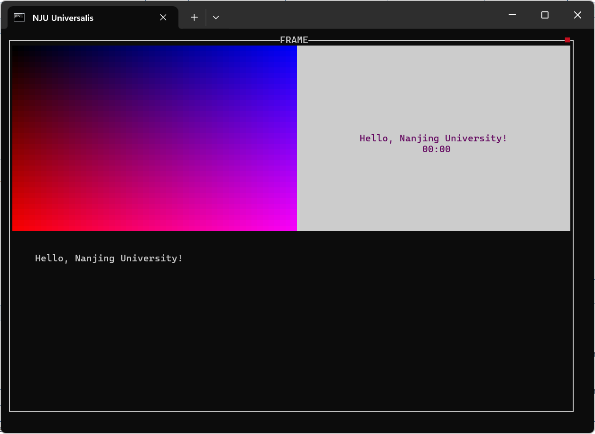
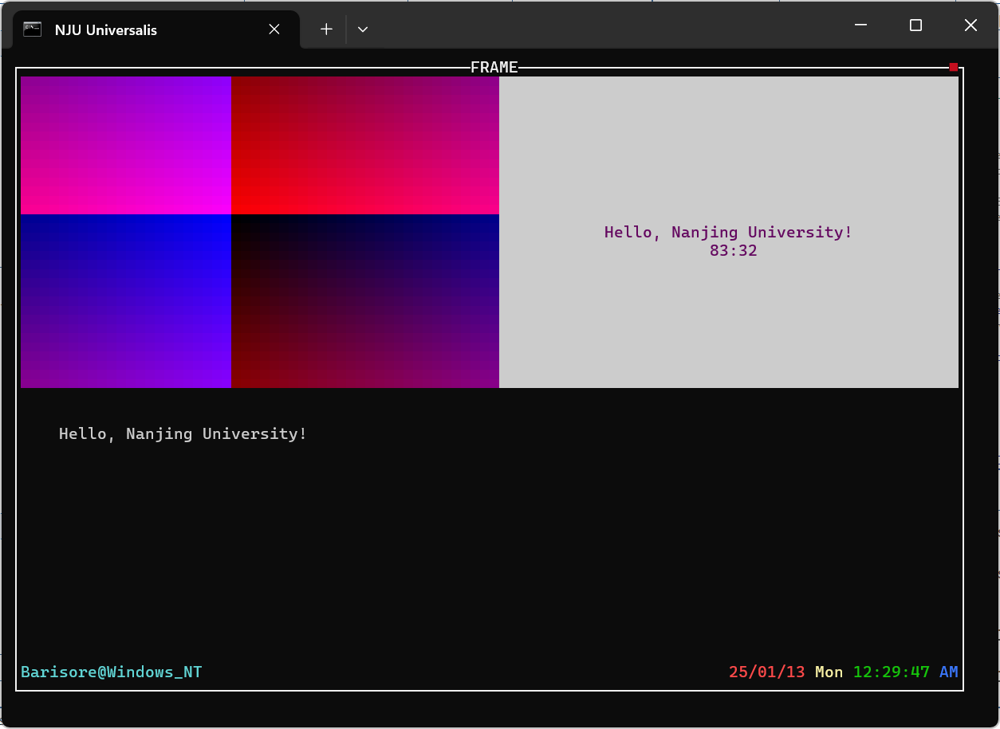

第二阶段¶
引入¶
完成了第一阶段的实践后，相信你已经对代码框架及其各个系统都有了一定认知。
有了基础之后，现在我们来在框架代码上进行增量开发以实现框架与布局系统，然后再在这两个系统的基础上实现一个更加完整的 GUI 窗口。
使用 git 管理各阶段代码
在开始第二阶段之前，我们建议你先创建第一阶段代码分支，并用 git 保存当前的进度：
git checkout -b phase1
git add .
git commit -m "finish phase1"
然后创建第二阶段分支，在这个新分支上进行开发：
git checkout -b phase2
这样，当你需要返回查看/运行第一阶段的代码时，你可以执行：
git add .
git stash save "phase2-tmp"
git checkout phase1
当你需要返回第二阶段时（如果你做了修改，那么需要重新在当前分支上保存进度），只需执行：
git checkout phase2
git stash pop
这里我们没有对这些 git 命令作出额外解释。
如果你感到好奇或者需要更加灵活地使用它们，请自行搜索或查阅文档。
git 的使用是一项你未来一定会用到的技能。
任务描述¶
本阶段的代码任务是：
- 任务一：完善框架系统（即实现框架组件基类
tui_frame）。 - 任务二：基于框架组件，实现一个状态栏。
- 任务三（选做）：基于框架组件实现主窗口
tui_main_window类。 - 任务四（选做）：实现布局系统，基于布局系统实现
tui_main_window。 - 任务五（选做）：让组件代理系统兼容于框架的子组件。
老规矩，代码任务分为必做和选做部分，时间所限，我们暂时只公布必做部分的讲义。
我们建议你在 1/15 前完成本阶段必做任务。
注意填充挖空代码
我们会将部分代码任务放到讲义给出的示例代码的空白处，并标注 //task phase2: xxx，请留意填写。
代码任务一：实现 tui_frame¶
引入¶
在上一阶段中我们已经介绍过框架系统并且实现了其基本机制。
概括说来，框架系统引入了框架组件来管理其子组件的绘制、事件及生命周期。
术语澄清
在本文中，我们不会特别详细地指明一个组件是子组件，请读者自行根据上下文推断。
通过使用框架组件及其嵌套，我们就能够创建一个具有多层级和多组件的复杂窗口了。
上一阶段中实现的 tui_border_proxy 就是一个最简单的框架组件。
在这一阶段，我们需要实现一个具有更完善、通用的子组件管理功能的框架组件类 tui_frame。
同时，和 tui_widget_proxy 作为一众组件代理类的基类一样，我们希望 tui_frame 能作为一般框架组件类的基类，这也是要求其功能具有通用性的原因。
创建框架组件类¶
首先，框架组件也是个一般的组件，因此我们可以在继承 tui_widget 的基础上创建框架组件类。
框架组件最基本的功能就是维护子组件列表，因此我们可以用组件指针的 vector 来维护它。
为维护子组件列表，我们还需要框架组件具有创建/删除子组件的接口，并在自身退出/析构时回收所有还未删除的子组件，于是我们可以有这样的基本实现（挖空部分需要你来实现）：
struct tui_frame: public tui_widget {
// 子组件列表
std::vector<tui_widget *> frame_contents;
// 增加组件
// @return 0 unless failed
int push_widget(tui_widget *widget);
// 另一个增加组件的接口（方便链式调用，但需要保证成功性）
tui_widget *add_frame_widget(tui_widget *widget);
// 删除组件
void erase_frame_widget(tui_widget *widget);
// 析构
~tui_frame();
};
// 构造函数
tui_frame::tui_frame(
tui_rect area,
std::vector<tui_widget *> content_list
) : tui_widget(area)
, frame_contents() {
// 加入参数列表中的所有组件
for (auto widget: content_list) {
this->push_widget(widget);
}
strcpy(name, "FRAME");
}
// 加入组件，目前我们还不做任何检查，总是成功
int
tui_frame::push_widget(tui_widget *widget) {
tui_assert(!widget->instaniated);
widget->frame = this;
widget->set_updated();
frame_contents.push_back(widget);
return 0;
}
// 一个工具接口，方便链式调用，已经实现好了
tui_widget *
tui_frame::add_frame_widget(tui_widget *widget) {
if (push_widget(widget)) {
Error("Fail %s", widget->name);
}
return widget;
}
// 删除组件
void
tui_frame::erase_frame_widget(
tui_widget *widget
) {
// 先回收组件
tui_widget::delete_widget(widget, true);
// 从列表中删除组件
// task phase2: delete widget from the vector of sub-widgets
return ;
}
tui_frame::~tui_frame() {
for (auto widget: frame_contents) {
tui_widget::delete_widget(widget, true);
}
}
怎么创建新的组件类呢？
到了第二阶段，我们已经不能够事无巨细的告诉你开发的细节步骤了。
如果对这些细节步骤有疑惑，可以回顾之前阶段的讲义或者求助互联网/他人。
我们上一阶段讲过，我们可以对框架组件的子组件增加一些约束来方便维护其事件/绘制，这里首要提及的约束就是——框架组件的子组件的 area 不重叠。
因此，我们可以不需要像 minitui 主系统那样实现 full_map 和/或窗口链表机制，直接实现一个接口来找某位置（相对坐标，我们说过在框架组件中，使用相对坐标来管理子组件）上的组件：
tui_widget *
tui_frame::find_widget(tui_point point) const {
// task phase2: find the widget at this point, else return NULL
// note the point is the *relative* position
return NULL;
}
同时，我们借助这个接口，可以实现在加入子组件时对重叠的检查，在有重叠时返回错误：
int
tui_frame::push_widget(tui_widget *widget) {
tui_assert(!widget->instaniated);
// 这里我帮大家写好了
// 注意看 for (auto point: area) 实现了对于一个 area 内所有 point 的枚举
// 这是通过 C++ 迭代器机制实现的，实现见 `geometry` 模块
// task phase2: check if there is overlap
for (auto point: widget->area) {
if (this->find_widget(point)) {
return -1;
}
}
widget->frame = this;
widget->set_updated();
frame_contents.push_back(widget);
return 0;
}
绘制管理¶
有了这个约束和 find_widget 之后，我们就容易实现框架的绘制转发了：
在绘制框架的某位置时，只需要找到该位置的子组件，并转换坐标后调用该组件的绘制方法即可。
和 tui_draw 的实现一样，为了提高性能，我们需要在子组件是 updated 的情况下再绘制组件，否则跳过绘制（用 ansi 转义序列将光标后移）。
void
tui_frame::draw(tui_point point) const {
auto widget = this->find_widget(point);
if (!widget) {
putchar(' ');
return ;
}
if (widget->get_updated()) {
// task phase2: convert point to local point and call `draw()` of sub-widget
} else {
ansi_cursor_fw(1);
}
}
检查点：测试绘制管理¶
代码回顾¶
经过刚刚的实现，你的 tui_frame 定义应该包含：
struct tui_frame: public tui_widget {
std::vector<tui_widget *> frame_contents;
tui_frame(tui_rect area, std::vector<tui_widget *> content_list=std::vector<tui_widget *>());
// @return 0 unless failed
int push_widget(tui_widget *widget);
// for chain call, should be used carefully
tui_widget *add_frame_widget(tui_widget *widget);
void erase_frame_widget(tui_widget *widget);
// @param point: local point in frame
tui_widget *find_widget(tui_point point) const;
void draw(tui_point point) const override;
~tui_frame();
};
顺便提醒，请在 minitui.h 中添加对 frame.h 的引用。
切换测试对象/修改窗口大小¶
现在让我们测试一下 tui_frame 的实现情况。
首先为了切换测试对象，我们需将 Makefile 中的 STAGE 变量替换成 test/phase2，然后执行 make clean。
同时，请将 scripts/gsetting.mk 中的窗口大小改成 100（宽）*35（高），这是我们在后续将一直使用的窗口大小。
窗口太大而我的屏幕太小怎么办？
调小 windows terminal 的字体大小，默认值和 UCRT64 的配置值都要修改。
单元测试
其实，借助切换 STAGE，可以进行单元测试，不过我们这里不详细提及。
创建测试程序¶
现在执行如下步骤：
- 在
test下和phase0一样新建phase2目录和其下的include和source目录。 - 将
game/目录下的mainscr.h和mainscr.cpp移动到对应的include/source位置。 - 在
source下新建main.cpp，填入以下内容：#include <minitui.h> // 导入屏幕组件 #include <mainscr.h> int main(int argc, char *argv[]) { tui_init(argc, argv); ansi_title("NJU Universalis"); // 创建框架组件 tui_frame *main_frame = new tui_frame(global_rect); // 给框架组件加上边框 auto main_frame_proxy = main_frame->set_attrs({"border shrink", "title"}); // 增加一个动态色阶子组件 main_frame->add_frame_widget( new tui_ncanvas( tui_rect( tui_point(0, 0), tui_point(main_frame->area.height() / 2, main_frame->area.width() / 2) ) ) ); // 增加一个屏幕子组件 auto mainscr_0 = new mainscr( tui_rect( tui_point(0, main_frame->area.width() / 2 + 1), tui_point(main_frame->area.height() / 2, main_frame->area.width() - 1) ) ); mainscr_0->set_global_formatter( tui_formatter(TUI_NJU_PURPLE, TUI_WHITE_V) ); mainscr_0->set_central_message( "Hello, Nanjing University!", tui_formatter(TUI_NJU_PURPLE, TUI_WHITE_V) ); main_frame->add_frame_widget(mainscr_0); // 增加一个文本框子组件 main_frame->add_frame_widget( new tui_textbox( tui_rect( tui_point(main_frame->area.height() / 2 + 1, 0), tui_point(main_frame->area.height() - 2, main_frame->area.width() - 1) ), "storage/Hello.txt", tui_formatter() ) ); root->create_widget(main_frame_proxy); int ret_value = tui_exec(); if (ret_value != 0) Warn("tui_exec() returns with a non-zero value %d", ret_value); return ret_value; }
运行测试程序¶
然后，运行 make -j8 shell 启动游戏启动器，然后启动程序。
请根据上一阶段完成情况修改代码
注意，在提供测试代码时我们都假设你只完成了上一阶段的必做内容。
如果你完成了带标题的 border 和 border_proxy 的性质解析，请对应修改 set_attrs 中的内容。
在之后的测试代码中也请同等处理。
OK，如果实现正确的话，你会看到如下窗口：

修正刷新机制¶
但现在你会遇到一个严峻的问题：为什么计时器和色阶组件都不动了？
如果你在间隔数秒后点击一下窗口，你将发现并不是它们不会动，而是它们没有刷新。
因此，我们需要改变一下原有的 update 机制，首先在 tui_reg_widget 的末尾加上将组件设置为 updated 的代码：
void
tui_reg_widget(
tui_widget *widget
) {
if (widget->instaniated) {
Warn("Repeat instaniating widget");
}
widget->instaniated = true;
tui_append_widget(widget);
tui_update_full_map(widget);
tui_set_focus(widget);
widget->set_updated();
}
然后，我们需要重载框架组件 reset_updated 的实现，阻止组件的更新状态被重置：
void
tui_frame::reset_updated() {
for (auto widget: frame_contents) {
widget->reset_updated();
}
}
还要修改 widget.h 中关于 reset_updated 的默认实现，使得在存在代理的情况下可以正确调用内部组件的 reset_updated：
virtual void reset_updated() {
if (proxy()) {
proxy_penetrator()->reset_updated();
} else {
updated = false;
}
};
修改了以上之后，执行 compile -c（启动器内）或 make clean; make -j8 shell 重新编译。
此时运行游戏，计时器和色阶组件应该都正常工作。
检查点
如果你正确完成了这个检查点的内容，可以运行 git add .; git commit -m "ckpt 1" 来保存这个检查点的进度。
能够正确运行此检查点可以得到本阶段 40% 的得分。
事件管理¶
基本思路¶
接下来我们来实现框架组件的事件管理。
为了实现事件管理，我们需要做两件事：
- 将事件分发给正确的子组件。
- 在子组件返回事件之后，进行正确的处理。
为了解耦这两种逻辑，我们将分两个接口 pre_event 和 post_event 来实现事件管理。
因此可以实现：
std::pair<tui_widget *, tui_event *> pre_event(tui_event *event);
tui_event *post_event(std::pair<tui_widget *, tui_event *> pre_result);
tui_event *on_event(tui_event *event) override;
tui_event *
tui_frame::on_event(tui_event *event) {
return post_event(pre_event(event));
}
std::pair<tui_widget *, tui_event *>
tui_frame::pre_event(tui_event *event) {
delete event;
return {NULL, NULL};
}
tui_event *
tui_frame::post_event(
std::pair<tui_widget *, tui_event *> pre_result
) {
auto widget = pre_result.first;
auto event = pre_result.second;
return event;
}
其中，在 pre_event 和 post_event 之间传递的信息是一个二元组，其中：
- 第一个元素表示接受了事件的组件，如果没有就是
NULL。 - 第二个元素表示该组件返回的事件，如果没有就是
NULL。
事件分发¶
和主系统相似地，实现事件管理需要维护一个焦点组件：
// 注意：在构造函数中一定要初始化为 `NULL`
tui_widget *focus_widget;
另外实现一个切换焦点的接口：
void
tui_frame::set_focus(tui_widget *focus) {
focus_widget = focus;
}
完成选做任务的同学请注意
上一阶段如果实现了对 focused 的维护，本阶段需要对应修改 set_focus 接口。
在有了焦点之后，显然事件应该被首先分发给焦点组件——如果没有焦点，就丢弃事件。
当然，鼠标事件除外：
- 对于点击类鼠标事件，我们需要将焦点切换到它点击的组件上，然后传递事件。
- 对于其他鼠标事件，我们也需要将事件转发给它点击的组件而不是焦点组件。
因此，我们需要在 pre_event 中先行判断到来的鼠标事件。
于是现在 pre_event 的逻辑可以写成这样：
std::pair<tui_widget *, tui_event *>
tui_frame::pre_event(tui_event *event) {
if (event->event_type == TUI_MOUSE_EVENT) {
// mouse events of type click will change focus
// and those of any type will send to the widget they point to
auto mouse_event = (tui_mouse_event *) event->event_body;
assert(contains_global(mouse_event->get_point()));
if ((mouse_event->type == MOUSE_LEFT_CLICK
|| mouse_event->type == MOUSE_RIGHT_CLICK
|| mouse_event->type == MOUSE_MID_CLICK) && mouse_event->ispress) {
// task phase2: switch the focus widget
}
auto widget = // task phase2: find the widget the mouse point to
if (widget) {
// task phase2: call the widget's `on_event()` and return the desired pair
}
} else {
if (focus_widget) {
// task phase2: call the widget's `on_event()` and return the desired pair
}
}
delete event;
return {NULL, NULL};
}
类似 tui_focus_on，寻找新的焦点组件可以由一个新的接口来实现：
void
tui_frame::focus_on(tui_point point) {
auto widget = // task phase2: find the widget the point is at
// we permit focus on a null widget
this->set_focus(widget);
}
注意，鼠标事件的点是全局的，你需要将它进行适当的转换来获取它——像上一阶段那样。
事件后处理¶
接下来让我们处理 pre_event 传回的组件-事件对。
在基础框架中，只有当接受到退出事件——即子组件要退出时需要处理，即删除掉子组件：
tui_event *
tui_frame::post_event(
std::pair<tui_widget *, tui_event *> pre_result
) {
auto widget = pre_result.first;
auto event = pre_result.second;
// task phase2: check exit event
return event;
}
当然，对于实现上一阶段选做任务的同学，别忘了转发 update 方法：
void
tui_frame::update() {
tui_assert(get_updated());
for (auto widget: frame_contents) {
widget->update();
}
}
检查点：测试事件管理¶
代码回顾¶
现在你的 tui_frame 定义应该是这样的：
struct tui_frame: public tui_widget {
std::vector<tui_widget *> frame_contents;
tui_widget *focus_widget;
tui_frame(tui_rect area, std::vector<tui_widget *> content_list=std::vector<tui_widget *>());
// @return 0 unless failed
int push_widget(tui_widget *widget);
// for chain call, should be used carefully
tui_widget *add_frame_widget(tui_widget *widget);
void erase_frame_widget(tui_widget *widget);
// @param point: local point in frame
tui_widget *find_widget(tui_point point) const;
void set_focus(tui_widget *focus);
void focus_on(tui_point point);
void draw(tui_point point) const override;
std::pair<tui_widget *, tui_event *> pre_event(tui_event *event);
tui_event *post_event(std::pair<tui_widget *, tui_event *> pre_result);
tui_event *on_event(tui_event *event) override;
void update() override;
void reset_updated() override;
~tui_frame();
};
运行测试¶
运行测试程序。
主要观察如下效果：
- 可以点击色阶或点击它后按
i来加速色阶的变化。 - 点击右边的计时器屏幕，按
q可以删除它。 - 点击
frame右上角的退出键可以退出frame。
但是注意到在焦点在计时器屏幕上点击 p 会导致程序闪退。
这是因为 mainscr 的实现有问题，创建新的窗口组件时用了子组件的相对坐标，修改其 on_event 实现：
else if (kbd_event->check_key('p')) {
create_widget(new tui_ncanvas(
tui_rect(global_rect.tail - tui_point(5, 5), global_rect.tail)
))->set_attrs({tui_fmt("quit %d", 'q')});
delete event;
return NULL;
}
改完……还是闪退，但是错的地方不同了，这是因为 create_widget 没有为框架子组件/代理组件设计，我们权宜地修改一下 create_widget 的实现：
tui_widget *
tui_widget::create_widget (
tui_widget *widget
) {
if (unproxy) {
return unproxy_penetrator()->create_widget(widget);
}
if (get_frame()) {
return get_frame()->create_widget(widget);
}
Debug("%s Creating widget %s", name, widget->name);
tui_reg_widget(widget);
return add_widget(widget);
}
这将子窗口的所有权挂给了最外层窗口，这将导致在子窗口退出时实际的「父亲」组件不会接到通知，我们会在下一阶段实现此通知的转发。
再测，又发现 bug：产生新窗口后点击 frame，发现被遮盖的窗口残留在 frame 上。
这是因为在 tui_reset_widget 调用 tui_reg_widget 设置 updated 时，子组件没有被设置 updated，因此需要重载 set_updated 接口：
void
tui_frame::set_updated() {
for (auto widget: frame_contents) {
widget->set_updated();
}
// 不能调用自己的，否则会死循环
tui_widget::set_updated();
}
当然，也要同时修改基类实现：
virtual void set_updated() {
if (proxy()) {
proxy_penetrator()->set_updated();
} else {
updated = true;
}
};
现在，在生成新窗口之后点击 frame 就可以正确遮盖它了，在关闭 frame 之后，程序不会退出而是露出该窗口。
再点击它后按下 q，该窗口也消失，程序退出。
检查点
到此代码任务一完成。
完成到此为止的部分可获得本部分 80% 得分。
代码任务二：状态栏¶
任务概况¶
有了框架组件以后，让我们在框架窗口内实现一个单行组件——状态栏。
添加了状态栏后的效果如下：

状态栏又由两个组件构成——左侧的状态信息和右侧的状态时钟。
现在我们就来实现它。
在实现之前，我们需要修改一下 canvas.h 的 print_content 实现，使其支持更灵活的参数列表（对模板编程有兴趣的同学可以研究一下这个实现）：
tui_point print_content(tui_point point, bool linelimit, tui_formatter formatter, const char *content);
// 按照当前 formatter 处理下一个 content
template <typename... Args>
tui_point print_content(tui_point point, bool linelimit, tui_formatter formatter, const char *content, Args... args) {
tui_point res = print_content(point, linelimit, formatter, content);
return print_content(res, linelimit, formatter, args...);
}
// 切换 formatter
template <typename... Args>
tui_point print_content(tui_point point, bool linelimit, tui_formatter formatter, tui_formatter new_formatter, Args... args) {
// erase WARNING
(void) (formatter);
return print_content(point, linelimit, new_formatter, args...);
}
tui_point
tui_canvas::print_content(
tui_point point,
bool linelimit,
tui_formatter formatter,
const char *content
) {
if (!content) {
Warn("NULL content!");
return point;
}
// 下面保持原样
}
状态信息¶
状态信息就是一个简单的纯文本显示组件，我们直接让它继承 tui_canvas：
struct tui_status_bar_info : public tui_canvas {
tui_status_bar_info(tui_point location);
};
tui_status_bar_info::tui_status_bar_info(
tui_point location
) : tui_canvas({location, location + tui_point(0, 36)}) {
strcpy(name, "STATUS_BAR_INFO");
print_content(
tui_point(0, 0),
false,
tui_formatter(TUI_LIGHT_CYAN_V, TUI_BLACK_V),
tui_fmt("%s@%s", getenv("USERNAME"), getenv("OS"))()
);
}
我们这里直接把正确实现告诉你了，目的是为了让你熟悉 tui_canvas 的打印内容接口 print_content 的使用方法。
注意看这行（段）代码：
print_content(
tui_point(0, 0), // 起始（相对）位置
false, // 禁止跨行
tui_formatter(TUI_LIGHT_CYAN_V, TUI_BLACK_V), // 设置颜色
tui_fmt("%s@%s", getenv("USERNAME"), getenv("OS"))() // 需要输出的字符串
);
这是 print_content 的最基础用法，基于模板编程，它支持可变的参数列表。
比如不用格式化字符串，拆开写也是可以的：
print_content(
tui_point(0, 0), // 起始（相对）位置
false, // 禁止跨行
tui_formatter(TUI_LIGHT_CYAN_V, TUI_BLACK_V), // 设置颜色
getenv("USERNAME"),
"@",
getenv("OS")
);
还可以在参数中间任何位置插入不同格式来修改后续文本的格式。
比如当你想让中间的 @ 和后面的 Windows_NT 显示白色时，可以这样使用：
print_content(
tui_point(0, 0), // 起始（相对）位置
false, // 禁止跨行
tui_formatter(TUI_LIGHT_CYAN_V, TUI_BLACK_V), // 设置颜色
getenv("USERNAME"),
tui_formatter(TUI_WHITE_V, TUI_BLACK_V), // 设置新颜色
"@",
getenv("OS")
);
状态时钟（静止版本）¶
学会了 print_content 以后，接下来的重头戏是实现状态时钟。
这仍然是个纯文本组件（我们先不实现时钟的走动），占据 24 个格子。
struct tui_status_bar_clock : public tui_canvas {
tui_status_bar_clock(tui_point location);
};
tui_status_bar_clock::tui_status_bar_clock(
tui_point location
) : tui_canvas({location, location + tui_point(0, 23)}) { // 占 24 个格子
strcpy(name, "STATUS_BAR_CLOCK");
// task phase2: 获取当前日期与时间，按照上文图示格式写入该组件。
}
获取日期 & 时间可以用 localtime 函数解析的 tm * 结构体。
检查点：测试两个小组件¶
代码回顾¶
现在你应该在新创建的 status_bar 模块新建了两个类了。
请注意在 minitui.h 中添加 include，并注意要添加在 frame.h 的下面。
运行测试¶
现在我们来测试你创建的两个新的小组件。
在 main.cpp 中继续为 main_frame 添加组件：
main_frame->add_frame_widget(
new tui_status_bar_info(
tui_point(main_frame->area.height() - 1, 0)
)
);
main_frame->add_frame_widget(
new tui_status_bar_clock(
tui_point(main_frame->area.height() - 1, main_frame->area.width() - 24)
)
);
现在编译运行，应当能够在 frame 底部出现一个“状态栏”了。
现在时钟还不会走动，你应当像上一个检查点一样测试各个组件的功能是否正常。
检查点
完成到此为止的部分可获得第二阶段 90% 得分。
状态栏组件¶
上一部分说的状态栏之所以还打引号，是因为状态栏此时还不是一个统一的组件，而是由两个互不关联的组件「拼」在一起的。
为了统合它们为一个状态栏组件，我们可以将代码任务一中实现的框架组件类作为基类，将状态栏组件实现为一个包含它们俩的框架组件。
因此，可以写出这样的定义和实现：
struct tui_status_bar : public tui_frame {
tui_status_bar(tui_rect area);
};
tui_status_bar::tui_status_bar(
tui_rect area
) : tui_frame(area) {
if (area.width() < 60) {
Error("Status bar is too narrow!");
}
tui_assert(area.height() == 1);
strcpy(name, "STATUS_BAR");
// task phase2: correctly add sub-widgets
// note: use position relative to STATUS BAR, not frame outside
add_frame_widget(...);
add_frame_widget(...);
}
检查点：测试状态栏组件及框架嵌套¶
代码回顾¶
现在你已经实现了三个组件类：状态栏组件、状态信息和状态时钟组件。
其中状态栏组件继承自框架组件类，也是一种框架组件。
运行测试¶
将刚刚添加的两个小组件改成添加状态栏组件：
auto status_bar = main_frame->add_frame_widget(
new tui_status_bar(
tui_rect(
tui_point(main_frame->area.height() - 1, 0),
tui_point(main_frame->area.height() - 1, main_frame->area.width() - 1)
)
)
);
此时发生了框架嵌套，即加入框架的组件也是一个框架组件。
重新编译运行项目，程序表现应当和上一个检查点的测试一模一样。
检查点
完成到此为止的部分可获得第二阶段 95% 得分。
让时钟动起来¶
到此为止状态时钟都是一个假的时钟——它不会动。
接下来我们让它动起来。
首先，我们需要实现一个接口来根据当前时间修改组件的内容：
void
tui_status_bar_clock::refresh() {
// task phase2: refresh the clock
}
提示：有时候优雅的修改不如暴力的重构，可以直接重写内容。
然后，我们需要定时（比如，每隔 200 毫秒）调用一次这个刷新接口。
可以在构造函数中新增定时任务：
// 新增一个定时调用任务
tui_timer::append(new tui_timer(
this, // 将自己绑定在任务上
200, // 200 ms 调用一次
[](tui_widget *widget) -> void { // 调用任务，是一个接受绑定组件指针为参数的函数
tui_status_bar_clock *clock = (tui_status_bar_clock *) widget;
clock->refresh();
},
true // 周期性调用
));
如果对这里直接传入匿名函数的语法感到好奇，可以搜索并学习 C++ 的 lambda 匿名函数机制。
现在重新编译运行项目进行测试，状态时钟应当可以正常走动了。
少女祈祷中……
第二阶段的必做任务到此结束。喝口水休息一下吧。
里程碑的一步！
祝贺你完成第二阶段，太强了！到此你可以获得项目 80% 的得分。